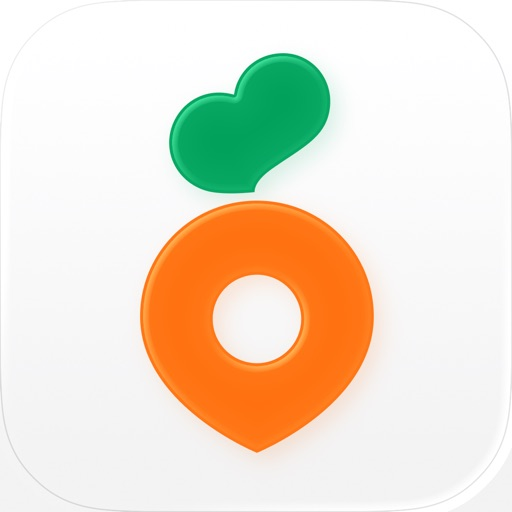

Google 지도
소개·메뉴·가격·영업시간·공식 링크
추천 현황을 진단하고, 가게 정보를 고칩니다.
2주 뒤, 무엇이 달라졌는지 확인하세요.
01 / 무료 AI 추천 진단
관광객의 질문으로 ChatGPT·Gemini를 반복 측정합니다.
추천 현황과 고쳐야 할 점의 개수를 보여 드립니다.
관광객이 음식·예산·위치로 물으면,
우리 가게는 어떻게 나올까요?
02 / 지도 정보 정비
AI가 자료와 현재 정보를 대조해 정비안을 준비합니다.
필요한 누락만 묻고, 승인한 내용을 지도에 반영합니다.
Google 지도 카카오맵
카카오맵03 / 정비 전후 비교
실제 정비가 끝난 날부터 14일 뒤.
같은 질문·AI·반복 횟수로 다시 확인합니다.
추천 등장률 · 평균 등장 순서
실제로 바뀐 정보까지 함께 비교합니다.
소개·메뉴·가격·영업시간·공식 링크
한 줄 소개·영업시간·가격 정보·서비스


 InstagramFacebook
InstagramFacebook
당근 샤오홍슈
샤오홍슈 Apple 지도
Apple 지도 계정당 첫 진단 1회 무료